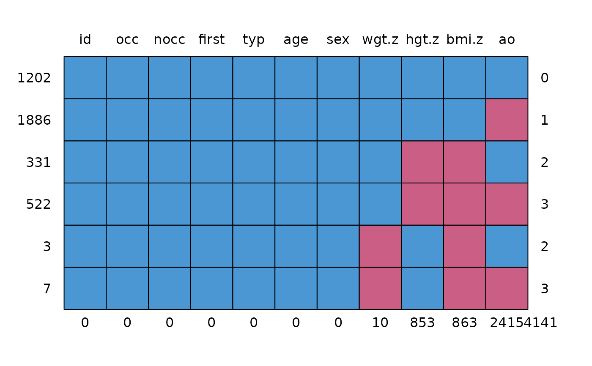

Data of subset of the Terneuzen Birth Cohort data on child growth.
Format
tbs is a data frame with 3951 rows and 11 columns:
- id
Person number
- occ
Occasion number
- nocc
Number of occasions
- first
Is this the first record for this person? (TRUE/FALSE)
- typ
Type of data (all observed)
- age
Age (years)
- sex
Sex 1=M, 2=F
- hgt.z
Height Z-score
- wgt.z
Weight Z-score
- bmi.z
BMI Z-score
- ao
Adult overweight (0=no, 1=yes)
tbc.target is a data frame with 2612 rows and 3 columns:
- id
Person number
- ao
Adult overweight (0=no, 1=yes)
- bmi.z.jv
BMI Z-score as young adult (18-29 years)
Source
De Kroon, M. L. A., Renders, C. M., Kuipers, E. C., van Wouwe, J. P., van Buuren, S., de Jonge, G. A., Hirasing, R. A. (2008). Identifying metabolic syndrome without blood tests in young adults - The Terneuzen birth cohort. European Journal of Public Health, 18(6), 656-660.
De Kroon, M. L. A., Renders, C. M., Van Wouwe, J. P., Van Buuren, S., Hirasing, R. A. (2010). The Terneuzen birth cohort: BMI changes between 2 and 6 years correlate strongest with adult overweight. PLoS ONE, 5(2), e9155.
De Kroon, M. L. A. (2011). The Terneuzen Birth Cohort. Detection and Prevention of Overweight and Cardiometabolic Risk from Infancy Onward. Dissertation, Vrije Universiteit, Amsterdam. https://research.vu.nl/en/publications/the-terneuzen-birth-cohort-detection-and-prevention-of-overweight
Van Buuren, S. (2018). Flexible Imputation of Missing Data. Second Edition. Chapman & Hall/CRC. Boca Raton, FL.
Details
This tbc data set is a random subset of persons from a much larger
collection of data from the Terneuzen Birth Cohort. The total cohort
comprises of 2604 unique persons, whereas the subset in tbc covers 306
persons. The tbc.target is an auxiliary data set containing two
outcomes at adult age. For more details, see De Kroon et al (2008, 2010,
2011). The imputation methodology is explained in Chapter 9 of Van Buuren
(2012).
Examples
data <- tbc
md.pattern(data)

#> id occ nocc first typ age sex wgt.z hgt.z bmi.z ao
#> 1202 1 1 1 1 1 1 1 1 1 1 1 0
#> 1886 1 1 1 1 1 1 1 1 1 1 0 1
#> 331 1 1 1 1 1 1 1 1 0 0 1 2
#> 522 1 1 1 1 1 1 1 1 0 0 0 3
#> 3 1 1 1 1 1 1 1 0 1 0 1 2
#> 7 1 1 1 1 1 1 1 0 1 0 0 3
#> 0 0 0 0 0 0 0 10 853 863 2415 4141